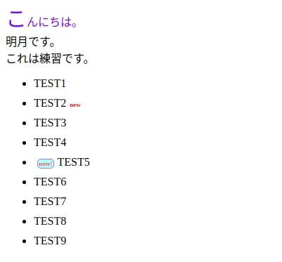

[CSS] 疑似要素選択子 - fist-line, first-letter, before, after
こんにちは。明月です。
前述で疑似クラス選択子に関して説明しましたが、今回は疑似要素選択子ですね。
名称が似てますが、選択対象に関しては全然違いますね。
疑似クラスの場合は同じタグのリストで何番目の要素を選択ということですが、疑似要素選択子はタグ要素を選択するという意味が近いではないかと思います。
この疑似要素はよく使いますが、特に内容を強調やiconを付ける時によく使いますね。
<!DOCTYPE>
<html>
<head></head>
<body>
<p>こんにちは。<br>明月です。<br />これは練習です。</p>
<ul>
<li>TEST1</li>
<li class="new">TEST2</li>
<li>TEST3</li>
<li>TEST4</li>
<li class="note">TEST5</li>
<li>TEST6</li>
<li>TEST7</li>
<li>TEST8</li>
<li>TEST9</li>
</ul>
</body>
</html>
/*pタグの一行目*/
p:first-line {
color:blue;
}
/*pタグの初めの文字*/
p:first-letter {
font-size:30px;
}
/*liタグ*/
li {
margin:10px 0px;
}
/*liタグの前の要素*/
li.note:before{
content:"note!"; /*「note!」という文字を入れる*/
border:1px solid rgba(52, 94, 236, 0.51);
margin:0px 5px;
border-radius:5px;
color:rgba(224, 89, 89, 0.88);
background-color:rgba(102, 255, 253, 0.39);
font-weight:bold;
padding:1px;
font-size:9px;
}
/*liタグの後の要素*/
li.new:after{
content:"new"; /*「new」という文字を入れる*/
color:red;
font-weight:bold;
font-size:9px;
margin:0px 5px;
}
「first-line」は「p」、「span」、「div」タグなどの文字列を入れられるタグに使う選択子です。
文字列で一行目だけ反映する選択子、つまり「br」タグの前までの適用される選択子です。タグの形式ではなく、文字列で選択する特徴をもっています。
「first-letter」の場合、初めの文字だけ反映する選択子です。日本語より英語で似合う選択子で、筆者も使ったことがないですね。
そして「before」と「after」はタグの前後に「content」の値を入れるタグです。

疑似要素選択子はメニューやアクティブ効果などで使うとよい選択子だと思います。
- [CSS] ブラウザから開発する方法 (developer mode)2019/12/25 07:54:31
- [CSS] 色スタイル、グラデーション2019/12/24 07:37:22
- [CSS] アニメーション (animation)2019/12/20 20:51:38
- [CSS] トランスフォーム (transform)2019/12/19 13:00:26
- [CSS] トランジション(transition)2019/12/18 20:33:57
- [CSS] Columnスタイル2019/12/17 19:52:56
- [CSS] 整列スタイル (float)2019/12/17 00:08:54
- [CSS] 位置(position),表示(display)スタイル2019/12/13 20:08:50
- [CSS] border(枠)、余白スタイル - border, margin, padding2019/12/12 20:16:43
- [CSS] 文字スタイル2019/12/11 21:13:22
- [CSS] その他の疑似選択子 - link, visited, target, enabled, disabled, not, active, hover, focus2019/12/10 07:31:28
- [CSS] 疑似要素選択子 - fist-line, first-letter, before, after2019/12/09 07:28:27
- [CSS] 範囲と指定に関する選択子(全体選択子、要素選択子、孫選択子、子選択子、隣接選択子)2019/12/06 07:27:36
- [CSS] 疑似クラス - only-child, only-of-type, empty, empty, root2019/12/05 07:29:15
- [CSS] 疑似クラス - first-child, last-child, first-of-type, last-of-type2019/12/04 07:28:37
最新投稿
- [Java] Base64にエンコード、デコードする方法2020/03/09 10:24:01
- [Java] cmdコマンドを実行するための方法2020/03/06 18:01:10
- [Java] メール(javax.mail)を発送する方法2020/03/05 20:07:49
- [Java] クラス複製(Clonable, Reflection)2020/03/05 00:03:19
- [Java] シリアライズ(直列化: Serializable)2020/03/03 00:03:33
- [Java] StringBuilderとStringBufferの差異2020/03/02 07:52:22
- [Java] Compare関数を使う方法2020/02/29 03:00:00
- [Java] 数字フォーマット(お金表示及び小数点以下表示)2020/02/28 03:00:00
- [Java] サーブレット環境で現在の実行ディレクトリを取得する方法2020/02/27 03:00:00
- [Java] 日本語をユニコードに変換して、ユニコードから日本語に変換する方法2020/02/26 03:00:00
- [Java] コンソールからデータを受け取る方法(System.in)2020/02/25 03:00:00
- [Java] Servlet環境でWebSocket通信中、HttpSessionを取得する方法2020/02/24 07:47:20
- [Java] WebSocketでWeb Sessionを使う方法(Broadcast)とウェブチャットの例2020/02/22 03:00:00
- [Java] WebSocket (ウェブソケット)2020/02/21 03:00:00
- [CakePHP] Errorページを設定する方法2020/02/20 03:00:00